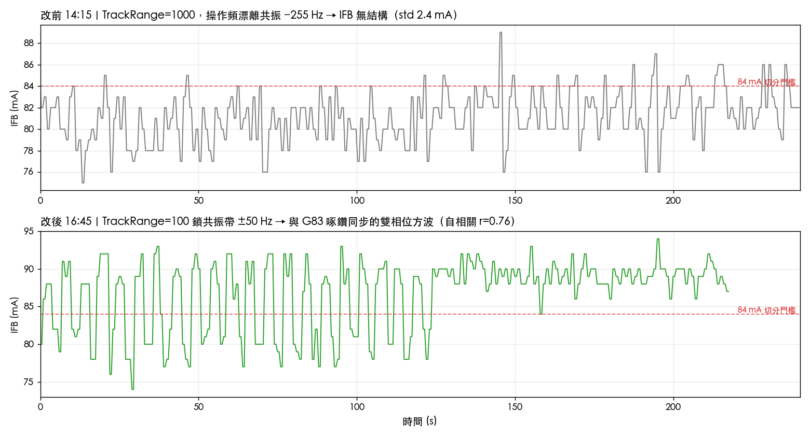
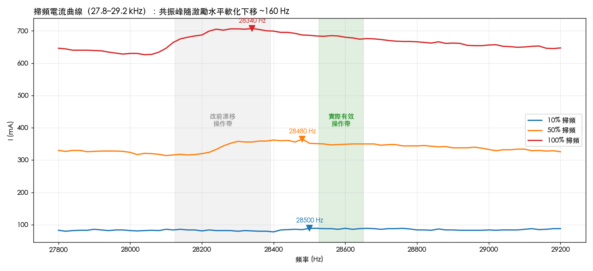
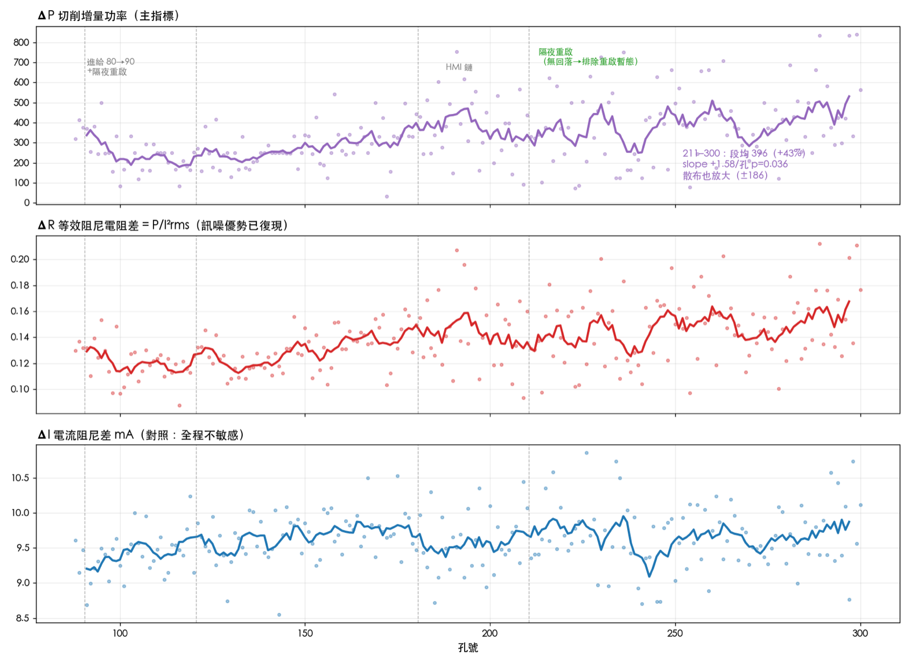
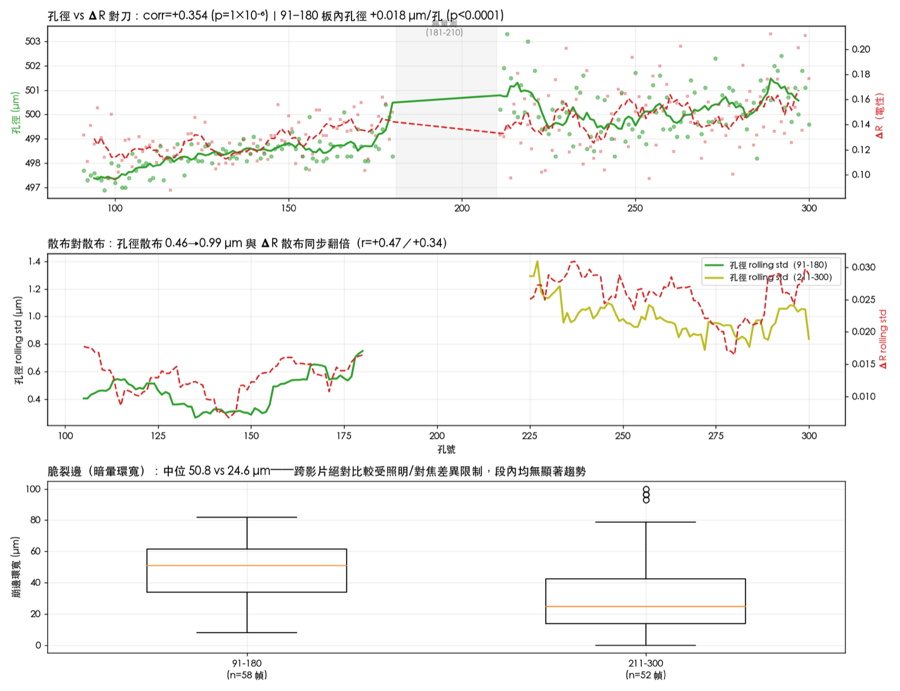

1. 軟硬體架構：訊號從哪裡來
UD7 驅動器內的三個關鍵元件構成一條控制鏈。ADC（類比數位轉換器）是感官，把振幅、電流等類比回授轉成數字——記錄檔裡的 IFB 已確認是 RMS 值（均方根，交流波形的等效幅值），不是瞬時取樣。
MCU（微控制器）是大腦，跑追頻與振幅兩個即時迴路；FREQ 欄的鋸齒就是追頻迴路的足跡。Buck（降壓轉換器）是功率閥門，負責直流端供電。
一個被資料推翻的假設：實測 Buck 電壓全程恆定約 250，功率變化全部反映在 Buck 電流上。「振幅控制靠調 Buck 電壓」不成立，實際執行端待研發部確認。
這條鏈決定了哪裡有資訊、哪裡沒有。被控制迴路鎖住的量（振幅）讀不到負載；負載資訊只存在於迴路外的量——電流、直流端實功、相位。
2. 前傳：沒有這次調參，後面什麼都看不到
長程收資料前一天（6/10），啄鑽過程的 IFB 完全看不出負載變化：75–89 mA 的無結構雜訊。當天下午調了四個追頻參數，IFB 變成與 G83 啄鑽同步的雙相位方波。
| 參數 | 改前 | 改後 | 語意 |
|---|---|---|---|
ETH_TrackRange_Value | 1000 | 100 | 追頻活動範圍——主因 |
TrackPrecision | 2 | 1 | 追頻步進精度 |
Judg_Value | 18 | 15 | 掃頻判共振的電流差門檻（mA） |
EXT_Scan_Vpp | 40 | 20 | 掃頻激勵電壓 |

為什麼漂離共振 255 Hz 就看不到負載？
改前的關鍵證據：驅動器自己判定共振在 28520 Hz，操作頻率卻漂到 28265 Hz。追頻器在 ±1000 的活動範圍內走失了，不是掃頻找錯峰。
偏共振操作有兩層殺傷：
- 靈敏度坍塌：共振點上，換能器阻抗由運動支路的電阻項主導，切削阻尼直接轉成電流變化；偏離後，電抗項以平方率稀釋阻尼的影響，IFB 對機械負載趨近於盲。
- 頻率雜訊注入：偏共振的坡上，電流對頻率的斜率陡。追頻器漫遊時，每一步頻率調整都轉成電流抖動，把殘存的負載訊號也蓋掉。
調整後操作頻率被釘在判定共振點 ±50 Hz 內。同樣的振幅設定下，Buck 實功從 1994 升到 3127（+57%）、IFB 總電流 81→87 mA。
機制：共振帶上運動支路導納放大，同樣的驅動設定吸入更多實功、振動更強，負載印記同步顯影。
掃頻的隱藏陷阱：共振點會隨激勵移動

三檔掃頻顯示，共振峰從 28500 → 28480 → 28340 Hz 軟化下移（大振幅下等效剛性下降）。掃頻電壓決定你找到哪個激勵版本的共振點。
| 掃頻檔位 | 工作帶峰位置 | 峰谷差 | 過 Judg=18 | 過 Judg=15 |
|---|---|---|---|---|
| 10% | 28500 Hz | 11 mA | ✗ | ✗ |
| 50% | 28480 Hz | 51 mA | ✓ | ✓ |
| 100% | 28340 Hz | 81 mA | ✓ | ✓ |
3. 數據：88–300 孔結果
88–210 為 123 孔、3,759 啄的四段重建（過程中修正了一次孔號編碼錯誤，三個歸因結論因此改寫——教訓收進第 5 節）；6/12 再併入 211–300 共 90 孔、2,781 啄，全程 213 孔。

- 121–180 段（同刀、同進給、同儀測鏈）：ΔP 自 247 升至 387，+2.11／孔（p=0.003）——切削負載隨孔數累積的主證據。
- 211–300 段（6/12 續鑽，同儀測鏈）：段均 ΔP 自 277 續升至 396（+43%），段內 +1.58／孔（p=0.036）——刀具到 300 孔，負載仍在累積。
- 91–120 段 ΔP 回落（350→178），與後段合成 V 形。ΔR 視角下此回落不顯著；且 210→211 同等 17 小時隔夜重啟後無回落（p=0.80）——「單純重啟暫態」解釋已排除，嫌疑收斂到 90→91 同步發生的進給變更或單次事件。
- 206–210 的「驟降警訊」在中位數聚合下不成立（p=0.27）——HMI 記錄鏈雜訊偽造的刀況事件，已撤回。
- ΔI 全程平穩（9.6±0.4 mA），對負載不敏感。
- 新警訊候選：211–300 段散布放大——ΔP 標準差 98→186、逐孔劇烈交替（101↔622）、ΔR 變異係數 0.12→0.18。水位上升加波動放大是磨耗後段常見的不穩定特徵。
孔品質對刀（NEXIV 影像量測，6/12 增補）
兩段 NEXIV AutoMeasure 錄影（氮化鋁板，3 排 × 30 孔）重建出 91–180、211–300 共 180 孔的逐孔孔徑，與電性指標對刀。四線會合：
- 磨耗足跡：91–180 板內孔徑單調成長 +0.018 µm／孔（p<0.0001、r²=0.47），497.7→498.8 µm；211–300 板再上一階至 500.3±1.1 µm。
- 散布同步：孔徑散布跨板翻倍（0.46→0.99 µm）與 ΔR 散布翻倍同步（散布相關 +0.47／+0.34）——上面的「新警訊候選」確認為真實品質劣化訊號。
- 電性×實體掛鉤：corr(孔徑, ΔR)=+0.354（p=1×10⁻⁶）> corr(孔徑, ΔP)=+0.309——ΔR 連對刀都更乾淨。
- V 形蓋棺：91–120 孔徑全程最小最穩（497.7±0.5 µm），無品質對應——連同重啟對照，確定為電性／製程暫態。

脆裂邊（崩邊環寬）量級：91–180 中位 50.8 µm、211–300 中位 24.6 µm，段內均無顯著趨勢；兩段錄影隔日拍攝、照明對焦不同，跨段絕對比較不做解讀，留待同條件重拍。
4. 指標體系：為什麼是 ΔP 與 ΔR
四個候選指標的命運分歧，根源都在「相位資訊在不在」。負載讓換能器「每安培做的功」變多（相位角變化），而不是讓電流或電壓幅值本身變化。
| 指標 | 定義 | 實測結果 | 機制 |
|---|---|---|---|
| ΔI | 電流兩相之差 | 不敏感 | 幅值被振幅迴路鎖住 |
| ΔS | VFB×IFB 兩相之差 | 與 ΔP 零相關（r=0.06） | 視在功率，丟掉 cos φ |
| ΔP | Buck 功率兩相之差 | +2.11／孔（p=0.003） | 直流實功自帶 cos φ |
| ΔR | P／I²rms 兩相之差 | 訊噪優勢兩輪復現 | 等於阻抗實部 Re(Z) |
ΔP 成立的根源是能量守恆：虛功只在電抗間來回振盪、不從電源拿能量，從直流軌被抽走的每一瓦都是實功。Buck 端不需要量相位，卻自動「結算」了交流端的 V·I·cos φ。
ΔR 把功率換算成阻抗實部——切削阻尼物理上就落在這一項。除以 I² 同時把電流水位的孔間波動歸一掉，所以主趨勢段的變異係數從 0.35 降到 0.12，顯著性提升一個量級（p=0.0003）。
ΔR 成立的前提是 IFB 為真 RMS 值，這正是研發部確認的事實。
5. 方法論：這次學到的可複用規則
- 量測系統的參數狀態先於訊號解讀。追頻參數錯了，收一整天也是白雜訊。換刀具、換能器或重調參數後，先驗證 IFB 雙相位方波存在，再開始長程收資料。
- 同孔（同啄）配對相減是設計核心，它扣掉電源軌漂移與換能器自熱。反例實測：對 6/10 的記錄用全段池化算 ΔP 得 −287，同啄局部配對得 +292——尾段空轉的自熱漂移污染了空切基準，局部配對不受影響。
- 逐孔聚合用中位數。孔 109 有一啄的功率讀值達正常值約 30 倍（單取樣突波），均值聚合會被拉爆成假事件。
- 孔號標定是單點故障。同一批波形換一套孔號對應，三個歸因全數改寫。啄計數能可靠切分孔次，但「檔案對應到哪些孔」必須由現場確認。
- 雜訊大的儀測鏈會偽造趨勢。HMI 匯出（0.59 秒不規則取樣）上的單調驟降，換 robust 聚合後只是交替散布。跨儀測鏈的絕對值不可直接比較。
6. 未解問題與下一步
211–300 檢核結果（6/12 收）：ΔP 趨勢延續（段均 +43%）；ΔR 訊噪優勢復現並升格；V 形左臂的重啟暫態假說被同等條件重複實驗排除；散布放大經孔品質對刀確認為真實劣化訊號——「ΔR 滾動散布」可發展為換刀預警的第二指標（水位 + 散布雙門檻）。
待問研發部（五題）：
- RMS 轉換器的時間常數與頻寬
- 韌體能否輸出實測振幅回授，驗證切削時的振幅下垂
- 振幅控制的實際執行端（Buck 電壓恆定的條件下）
- 有效操作帶（28.55–28.65 kHz）高於小訊號掃頻峰，與軟化方向相反——何者主導
- Judg_Value 與掃頻電壓的建議配套表
待現場確認：
- 孔 90→91 隔夜重啟時，除進給 80→90 nm 外還動了什麼（重夾刀？驅動功率設定？）——歸因 V 形左臂殘餘問題
- 鑽孔程式走線方向（逐排 X 遞增 vs 蛇形折返）——對刀映射的殘留假設
- 崩邊對刀：同條件重拍量測影像或實體顯微照
更遠的路：驅動器若能輸出相位差或阻抗，是比 ΔP 更上游的負載量。ΔP／ΔR 與實體孔品質（孔徑、出口毛邊）對刀後，可建立換刀門檻值。